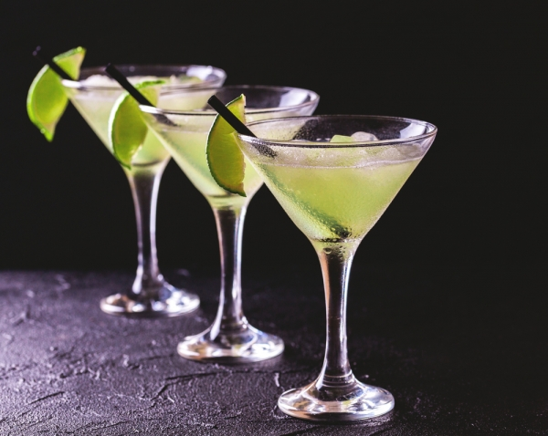
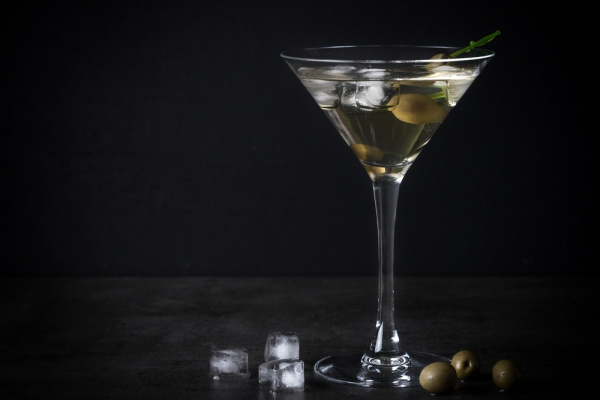
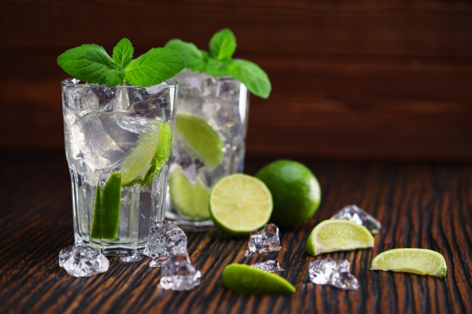
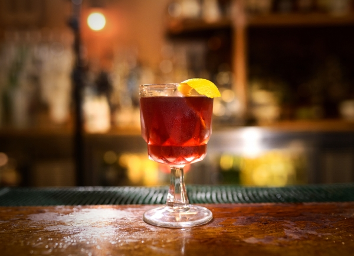
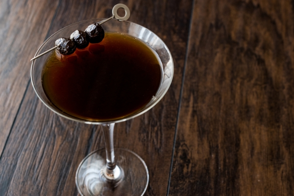
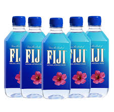

|
Raspberry Sgroppino
$170 |
Es una deliciosa mezcla de helado de vodka, prosecco, y jugo de fruta que realmente quiere festejar contigo. Se puede usar cualquier sabor de jugo si lo tuyo no es la frambuesa. |
|  |
Daiquirí
$120 |
El daiquirí es un coctel famoso en todo el mundo y actualmente se prepara de muchos sabores, pero su preparación típica es a base de ron blanco, hielo y zumo de limón. |
|  |
Martini
$150 |
El martini es una de las bebidas más elegantes que el mundo haya visto, su preparación está compuesta de ginebra con vermú seco. |
|  |
Mojito
$135 |
Es uno de los cocteles más populares en el mundo. Su origen es cubano y está compuesto por ron, algunas cucharadas de azúcar, limón, hierbabuena y en algunos casos agua mineralizada. |
|  |
Negroni
$100 |
Está hecho con Bitter Campari, Ginebra, hielo y una rodaja de naranja. |
|  |
Manhattan
$110 |
El Manhattan tiene como ingredientes principales whiskey, vermut, angostura y se sirve sin hielo, en una copa de martini fría. |
|  |
Agua Fiji
$75 |
Embotellada en las islas Fiji y extraída del manto acuífero Viti Levu. Elaborada a partir de la lluvia que se filtró por rocas abundantes en minerales durante años, característica que contribuye a ofrecer suavidad en la boca al consumirla. |
 |
Jarras de agua de sabor
$110 |
Refrescate con agua de diferentes sabores frutales (a tu elcción) para poder tomar en familia y sobre todo para que los niños puedan disfrutar de esta. |